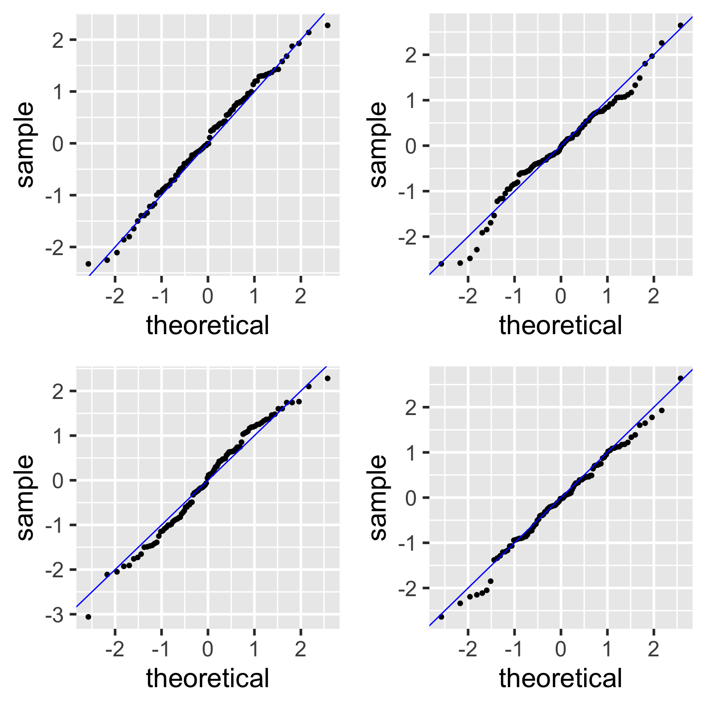

| term | estimate | std.error | statistic | p.value |
|---|---|---|---|---|
| (Intercept) | 50.93 | 2.66 | 19.14 | 0.00 |
| female_literacy_rate_2011 | 0.23 | 0.03 | 7.38 | 0.00 |
SLR: Model Evaluation and Diagnostics
2023-01-29
Let’s remind ourselves of the model that we have been working with
We have been looking at the association between life expectancy and female literacy rate
We used OLS to find the coefficient estimates of our best-fit line
\[Y = \beta_0 + \beta_1 X + \epsilon\]

Our residuals will help us a lot in our diagnostics!
The residuals \(\widehat\epsilon_i\) are the vertical distances between
- the observed data \((X_i, Y_i)\)
- the fitted values (regression line) \(\widehat{Y}_i = \widehat\beta_0 + \widehat\beta_1 X_i\)
\[ \widehat\epsilon_i =Y_i - \widehat{Y}_i \text{, for } i=1, 2, ..., n \]

L: Linearity
- The relationship between the variables is linear (a straight line):
- The mean value of \(Y\) given \(X\), \(\mu_{y|x}\) or \(E[Y|X]\), is a straight-line function of \(X\)
\[\mu_{y|x} = \beta_0 + \beta_1 \cdot X\]

N: Normality
- For any fixed value of \(X\), \(Y\) has normal distribution.
- Note: This is not about \(Y\) alone, but \(Y|X\)
- Equivalently, the measurement (random) errors \(\epsilon_i\) ’s normally distributed
- This is more often what we check

E: Equality of variance of the residuals
The variance of \(Y\) given \(X\) (\(\sigma_{Y|X}^2\)), is the same for any \(X\)
- We use just \(\sigma^2\) to denote the common variance
This is also called homoscedasticity

N: Check normality with “usual” distribution plots
Note that below I save each figure as an object, and then combine them together in one row of output using grid.arrange() from the gridExtra package

N: Normal QQ plots (QQ = quantile-quantile)
- It can be tricky to eyeball with a histogram or density plot whether the residuals are normal or not
- QQ plots are often used to help with this
- Vertical axis: data quantiles
- data points are sorted in order and
- assigned quantiles based on how many data points there are
- Horizontal axis: theoretical quantiles
- mean and standard deviation (SD) calculated from the data points
- theoretical quantiles are calculated for each point, assuming the data are modeled by a normal distribution with the mean and SD of the data
- Data are approximately normal if points fall on a line.

N: Examples of Normal QQ plots (from \(n=100\) observations)
Normal
Uniform
T
Skewed


N: We can compare the QQ plots: model vs. theoretical

E: Creating a residual plot
- \(x\) = explanatory variable from regression model
- (or the fitted values for a multiple regression)
- \(y\) = residuals from regression model